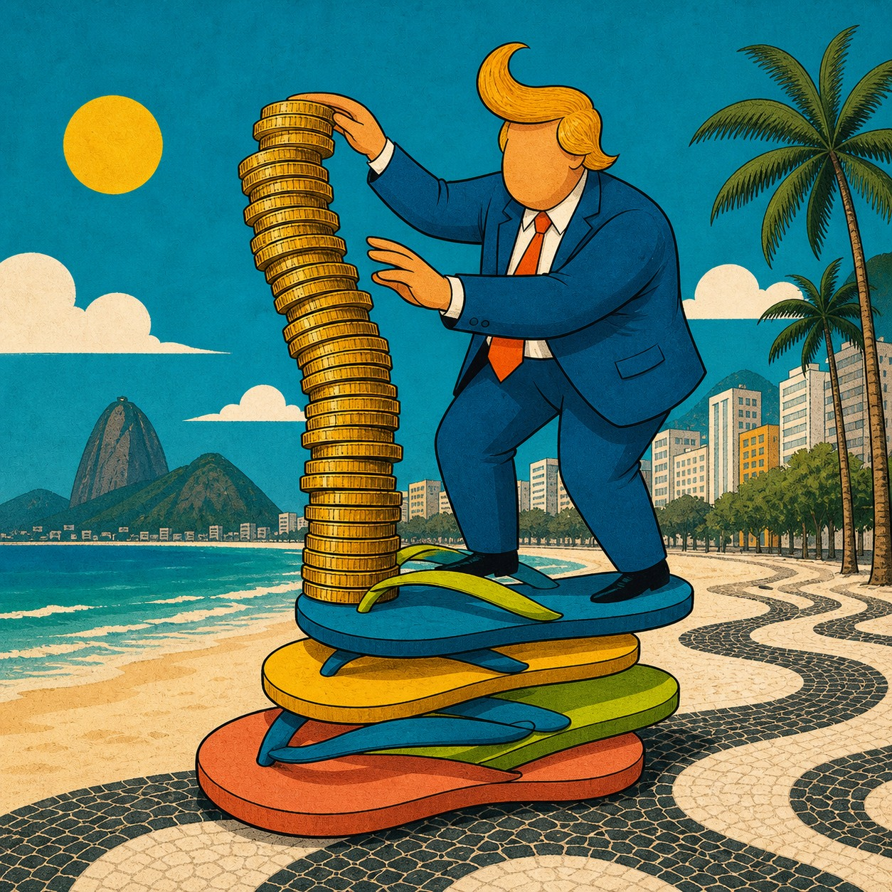
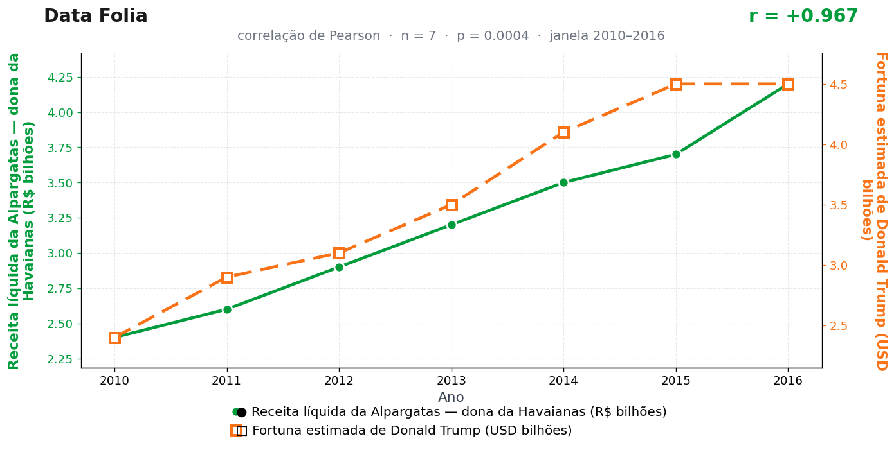

Post de 14/09/2026

A teoria
O chinelo é um indicador de conforto. Quando a Alpargatas cresce, ela registra mais do que venda: registra um país disposto a circular, consumir, viajar e transformar descanso em valor econômico.
Esse clima de consumo alcança o mundo do luxo. Resorts, imóveis, marcas pessoais e vitrines douradas dependem da mesma sensação de mundo aquecido que faz o pé brasileiro sair de casa em modo verão.
A ligação passa pelo conforto como moeda. O chinelo traduz confiança popular; a fortuna de Trump traduz confiança de vitrine. Um anda na calçada, o outro sobe no elevador, mas ambos dependem do mesmo impulso de consumo.
Até onde a apuração alcançou, nenhuma das partes usa o calçado da outra. A Trump Tower não tem chinelódromo; a sede da Alpargatas não tem cobertura dourada. A correlação, ainda assim, não se abalou.
A teoria é ficção; a correlação é real: r = 0,97 (n = 7, p < 0,001).
Os dados por trás

- Receita líquida da Alpargatas — dona da Havaianas (R$ bilhões) — 7 pontos anuais, período 2010–2016. Fonte: Alpargatas — relatórios anuais (4T).
- Fortuna estimada de Donald Trump (USD bilhões) — 7 pontos anuais, período 2010–2016. Fonte: Forbes — The World's Billionaires.
Como as correlações deste site são encontradas — e por que você não deve confiar nelas — está explicado na nossa metodologia.
Por que isso acontece?
Receita líquida em reais correntes é uma série que quase sempre sobe: inflação, expansão da empresa e crescimento nominal da economia empurram o número para cima ano após ano. Estimativas de fortuna da Forbes, numa década de ativos em valorização, também sobem. Duas séries nominais crescentes = correlação alta garantida, sem que chinelo e imóvel de luxo troquem uma palavra.
O teste honesto seria deflacionar as duas séries (tirar a inflação) ou comparar variações ano a ano em vez de níveis. Esse procedimento, padrão em economia justamente para evitar correlações espúrias, desmancharia o r = 0,97 na hora — motivo pelo qual este site jamais o aplicará.
Com 7 pontos anuais e tendências suaves dos dois lados, o p = 0,0004 é mais um enfeite: ele pressupõe independência entre observações que uma série com tendência não oferece. O que o leitor vê é o formato das curvas; o resto é moldura.
Post de 14/09/2026 · publicado também no Instagram @datafolia.